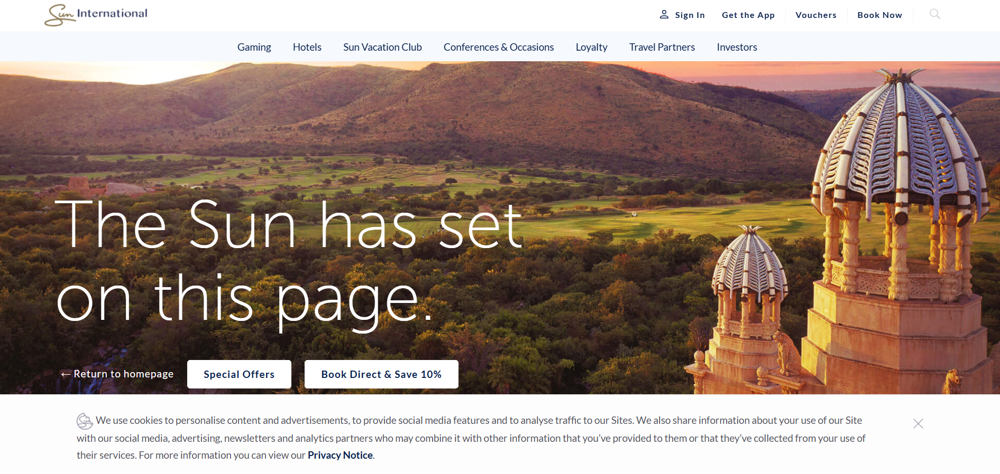
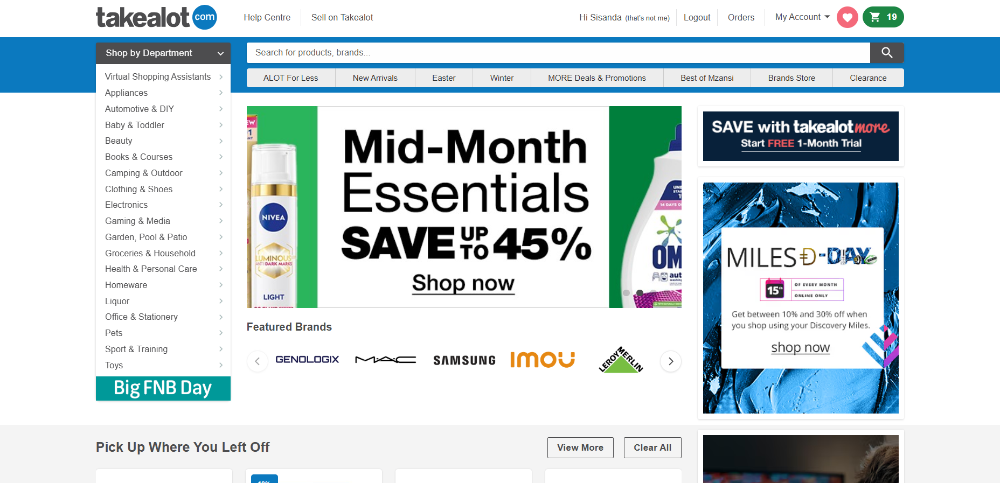

Analyzing Real-World UX/UI Examples
In preparation for Essay 1, I explored two well-known South African websites, Sun City Resort and Takealot , to analyze their user experience (UX) and user interface (UI) design. Sun City’s site offers a visually immersive experience with rich media and strong branding but struggles with speed and readability in some areas. In contrast, Takealot prioritizes functionality and product variety, making it a convenient e-commerce platform, though it risks overwhelming users with too many options and occasional service delays. This comparison helped me think more critically about how design choices affect usability and user trust.
Sun City Resort & Entertainment
www.suninternational.com

Pros:
• High-quality images showcase the resort’s luxurious experience.
• It uses Sun International’s signature colors and fonts for brand recognition.
• It has a clean and organized layout that prevents clutter.
• The videos and animations enhance the immersive experience.
• There is easy access to sections like accommodation, activities, and bookings.
Cons:
• There are large images and videos that slow down loading time.
• Certain sections have readability issues due to low contrast.
• There is too much information in some areas and it can feel overwhelming.
• Some interactive elements don’t resize properly on smaller screens.
• The typography is inconsistant in different sections.
Takealot
www.takealot.com

Pros:
• There is a simple and secure checkout with multiple payment options.
• The real-time tracking system might improve customer confidence.
• There is a diverse selection of products across multiple categories.
• There are comprehensive descriptions, reviews, and ratings that help customers make informed choices.
Cons:
• There are too many options on the pages which can lead to decision fatigue.
• Some products show availability but turn out to be out of stock.
• Some users report late deliveries affecting trust in the system.
• Some users experience delays in responses from support.